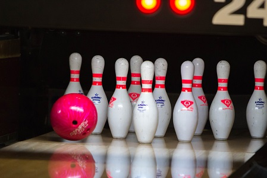
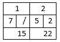
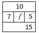
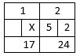
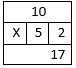
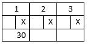
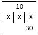

Bowling Again (but shorter)
For the older version of this exercise, click here.
Fall 2018: Question 25 (use Python to write this program)
 After a few weeks, Xiao Ming goes to the bowling alley for another game of bowling.
Xiao Ming has played eight frames, so he now has only two frames left in his game. Let's assume Xiao Ming did not score anything in the first 8 frames (it's been a few weeks, but too bad Xiao Ming still can't properly bowl...). Please calculate the total score earned for the remaining two frames.
The rules are the same as in the earlier bowling exercise, with the following additional rules:
- A player can roll the second ball in a frame if the player did not knock down all 10 pins in the first roll. Otherwise, the frame ends.
- If a player knocks down all 10 pins in the tenth frame, the player can roll for a third time.
Scoring rules:
- One point is awarded for every pin knocked down. The total number of pins knocked down in two throws must be less than 10.
For example, if 7 pins and 2 pins are knocked down in the first and second throw, respectively, input: 7 2.
The player gets a total of 7 + 2 = 9 points for the frame. - If all pins are knocked down in two hits, then the player gets a SPARE.
The player can add the total number of pins knocked down in the next one roll into the score.
For example, if 7 pins and 3 pins are knocked down in the first and second throw, and in the throw after that, 5 pins are knocked down, input: 7 3.
If the spare happens in the tenth frame, input: 7 3 5 0 (note: you can only throw at most three times in the tenth frame!)
 
The player gets a total of 7 + 3 + 5 = 15 points for the frame with the spare. - If all pins are knocked down in one hit, then the player gets a STRIKE. If a player gets a strike, the player cannot throw another ball for that frame.
The player can add the total number of pins knocked down in the next two rolls into the score.
For example:- if a player gets a strike, and in the two throws following that, 5 pins and 2 pins are knocked down, input: 10 0.
If the strike happens in the tenth frame, input: 10 0 5 2.
 
The player gets a total of 10 + 5 + 2 = 17 points for the frame with the strike (if the strike happened in the tenth frame, the 0 is not counted towards the final score). - if a player gets a turkey (three strikes in a row), input 10 0.
If the turkey happens in the tenth frame, input: 10 0 10 10.
 
- if a player gets a strike, and in the two throws following that, 5 pins and 2 pins are knocked down, input: 10 0.
Input instructions:
- Input the scores for each throw in the remaining two frames, one line for each throw.
- If all the pins are knocked out in the tenth frame, input the score for the extra throw(s) in the same line.
Output instruction: Output the score earned from the two frames.
| Sample Input | Expected Output | Explanation (bonus scores in brackets) |
|---|---|---|
| 2 5 7 1 | 15 | |
|
5 5 10 0 8 0 |
38 | |
|
10 0 10 0 8 2 |
48 | Frame 9 score: 10 + (10 + 8) = 28 Frame 10 score: 10 + 8 + 2 = 20 Score after Frame 10: 28 + 20 = 48 |
|
8 2 7 3 8 0 |
35 | Frame 9 score: 8 + 2 + (7) = 17 Frame 10 score: 7 + 3 + 8 = 18 Score after Frame 10: 17 + 18 = 35 |